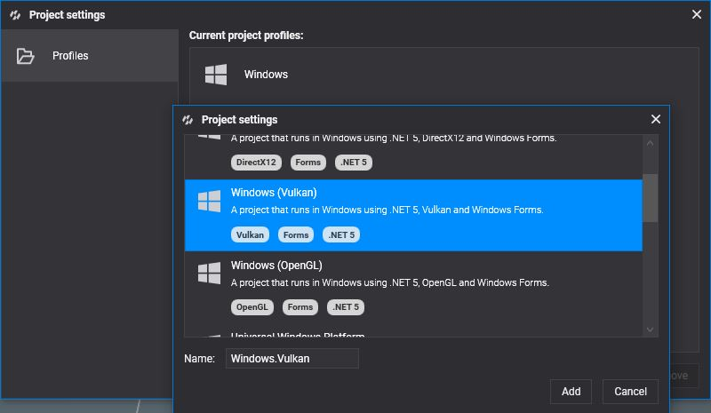
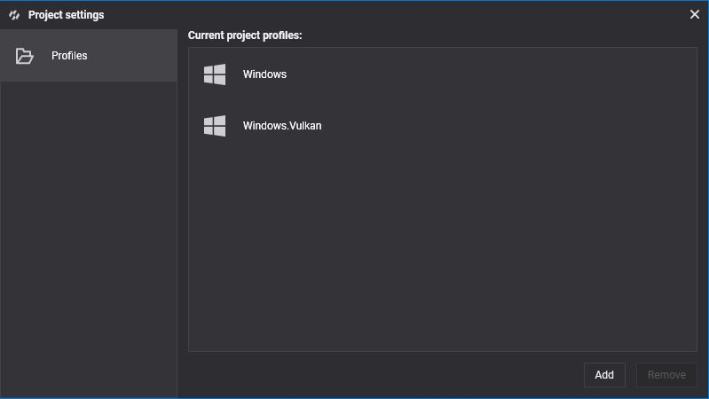
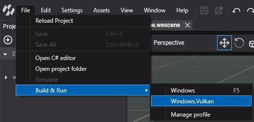

Vulkan
Vulkan is the explicit, cross-platform graphics and compute API of the Khronos Group. It gives Evergine the same low-overhead model as DirectX 12, with multithreaded recording and separate queues, and it supports ray tracing and mesh shaders on devices that expose them.
It is the default backend on Android, including the Meta Quest and Pico standalone headsets, and it is also available on Windows through the Windows (Vulkan) template.
Supported devices
- Android phones and tablets.
- Meta Quest and Pico headsets, through the OpenXR templates.
- Windows 10 and 11 PCs.
Check your Vulkan version
Vulkan comes with the graphics driver. Update the driver to get the latest version, and install the Vulkan SDK if you want the validation layers and debugging tools.
Create a graphics context
GraphicsContext graphicsContext = new Evergine.Vulkan.VKGraphicsContext();
graphicsContext.CreateDevice();
If your application needs Vulkan extensions beyond the ones Evergine enables, pass them to the constructor: device extensions first, then instance extensions. Evergine Studio does this to enable multiview, which it needs to generate IBL cube maps:
GraphicsContext graphicsContext = new Evergine.Vulkan.VKGraphicsContext(
deviceExtensionsToEnable: new[] { "VK_KHR_multiview" },
instanceExtensionsToEnable: System.Array.Empty<string>());
graphicsContext.CreateDevice();
Build & Run
New Android projects use Vulkan already. To add Vulkan on Windows, add a profile with the Windows (Vulkan) template from Settings > Project Settings (see DirectX 12 for the steps):


Then run it from File > Build & Run > Windows.Vulkan:
